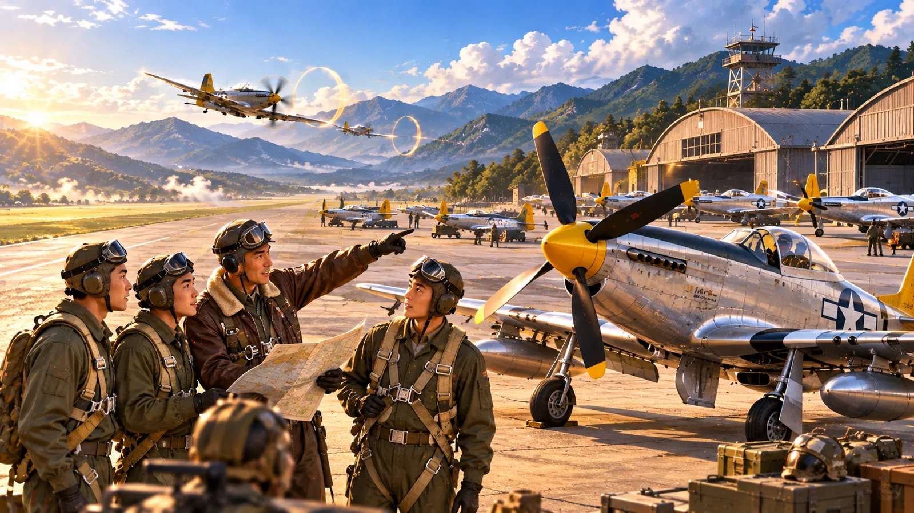
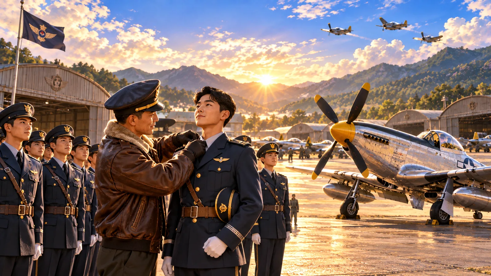

📱 비행 조작은 가로 화면이 더 편리합니다. 세로 화면에서도 계속할 수 있어요.
📱 ↻
가로로 돌려 주세요
비행 조종은 가로 화면이 편리합니다. 자동 가로 잠금이 지원되지 않는 브라우저는 휴대전화의 자동 회전을 켜 주세요.
대한민국 공군 역사 체험
작전 준비
출격 명령을 확인하세요.
비행장 준비 중…
목표
0속도 kt
0고도 ft
000방위
70추력 %
기체
미션 영상
확인 중
미션 영상 끝
작전의 핵심 3가지를 확인해요
6·25 전쟁 대한민국 공군하늘의 작전
F-51 무스탕 조종석에 앉아 6·25 전쟁 때 한국 공군이 해낸 작전을 직접 날아 봐요. 해인사를 지킨 판단, 끊기지 않던 철교, 351고지의 하늘, 그리고 블랙이글스 에어쇼까지.
🗺️ 작전상황실
소위 임관 후 역사 작전을 선택하세요
작전상황실
지도 표시를 눌러 작전 내용을 확인하고 출격하세요.
극비
일시정지
조종 설정
초등학생 체험 모드 (추락 자동 구조·계기판 단순화)
쉬운 조종 (손을 떼면 날개 수평, 목표 신호·조준 보정)
자동 수평 보조 (손을 떼면 날개가 수평으로)
실제 조종간 방식 (↓ 당기면 상승, ↑ 밀면 하강)
소리 (전체)
가상 관제사 음성 (교육용 합성 음성)
배경음악
🔊 음량 세부 조절실제 무전 대사는 글자로 표시되며, 무전 중 배경음악이 자동으로 낮아집니다.
조종법 다시 보기
그래픽 품질 (저사양 기기: 낮음 권장)
전체화면
비행 중 ? 버튼이나 H 키로 다시 볼 수 있어요
대한민국 공군 · 교육용 가상 비행학교
하늘의 비행학교

비행 교관 · 환영합니다. 조종간을 움직여 금빛 관문을 통과하세요.
기초 조종 훈련
1단계 · 조종 적응
좌우 선회와 상승·하강을 연습하세요.
추력 0% · 속도 0 · 고도 0m
임관
대한민국 공군 역사 체험 · 가상 임관식
훈련을 마친 조종사의 임관을 축하합니다

비행학교 수료!
★ 소위 ★
이륙 · 기초 비행 · 관문 통과 · 기총 사격 · 로켓 사격 · 착륙 훈련 수료
이제 교육용 가상 조종사 소위로 임관하여 역사 속 작전에 출격합니다.
역사 체험을 위한 가상 계급이며 실제 군 임관과는 관계없습니다.